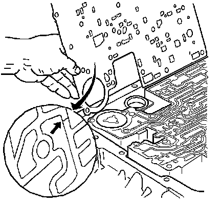
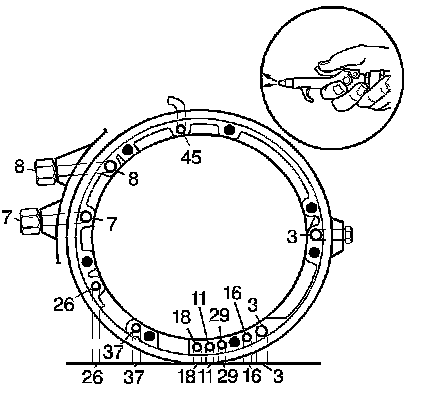
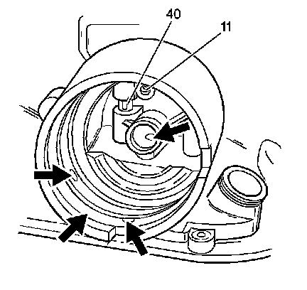
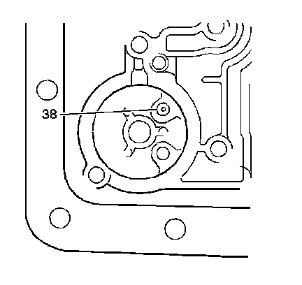

Case Assembly Inspection
Case Assembly Inspection

1. Inspect the spacer plate to case gasket for witness marks. The witness marks should be complete. Incomplete witness marks may come from an uneven case surface or from cross channel leaks.

2. Using compressed air, blow into all of the case fluid passages (3, 7, 8, 11, 16, 18, 26, 29, 37, 45) to ensure that all case fluid passages are clear of any obstruction.

3. Inspect the 2-4 servo bore, the 3rd accumulator retainer and ball assembly (40), the orifice cup plug (11) in the servo bore, and the 2nd apply piston pin bore for any of the following conditions:
^ Porosity
^ Burrs
^ Debris
^ Any other damage

4. Inspect the 3-4 accumulator bore and the orifice cup plug (38) for any of the following conditions:
^ Porosity
^ Burrs
^ Blockage
^ Any other damage
5. Inspect all bolt holes for thread damage. Use heli-coil to repair damaged threads.
6. Inspect the cooler connectors for damage and proper torque.
Cooler connector torque should be 38 N.m (28 lb ft)